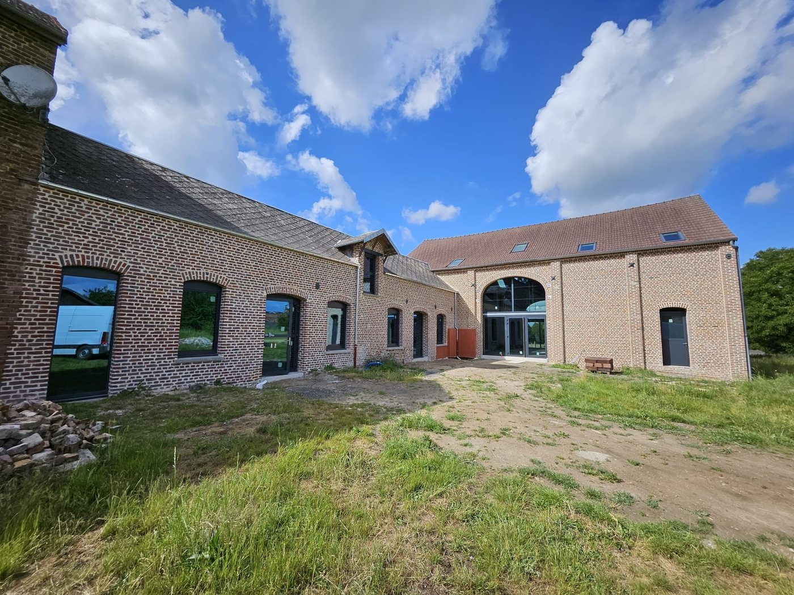
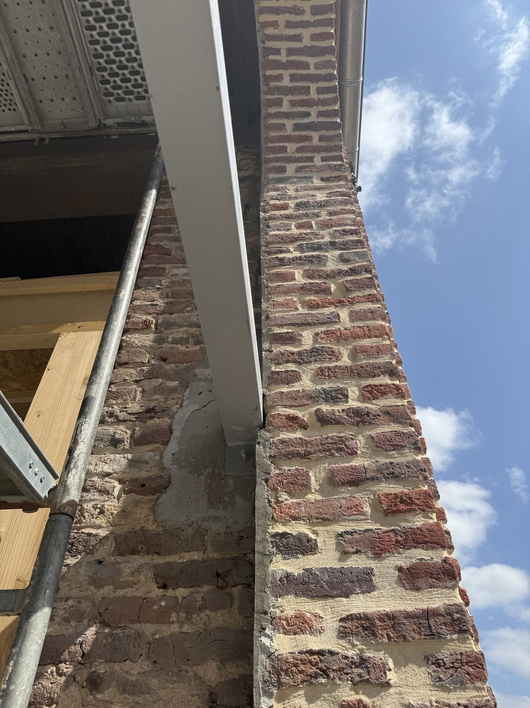
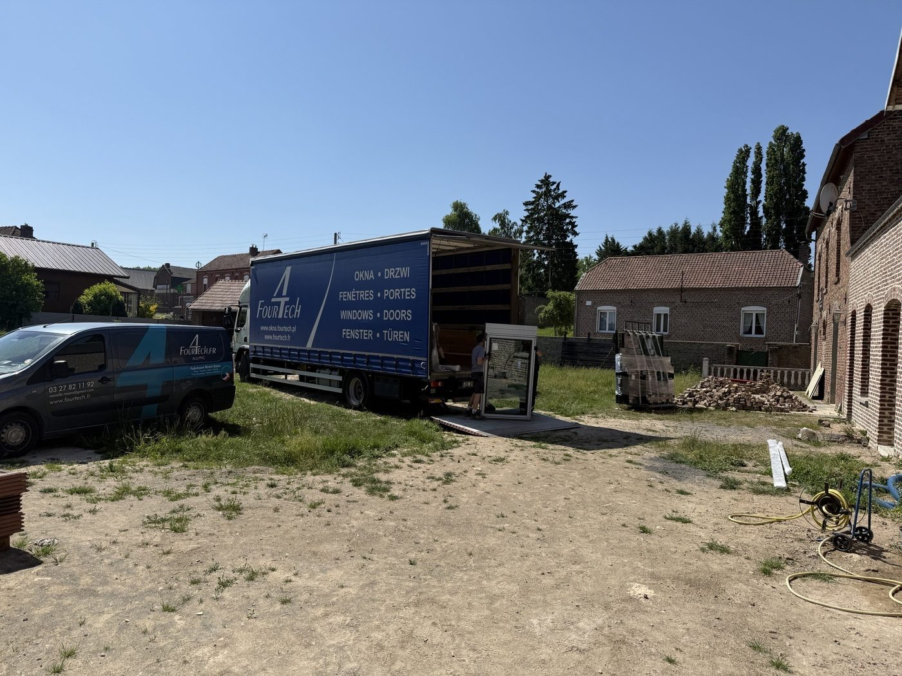
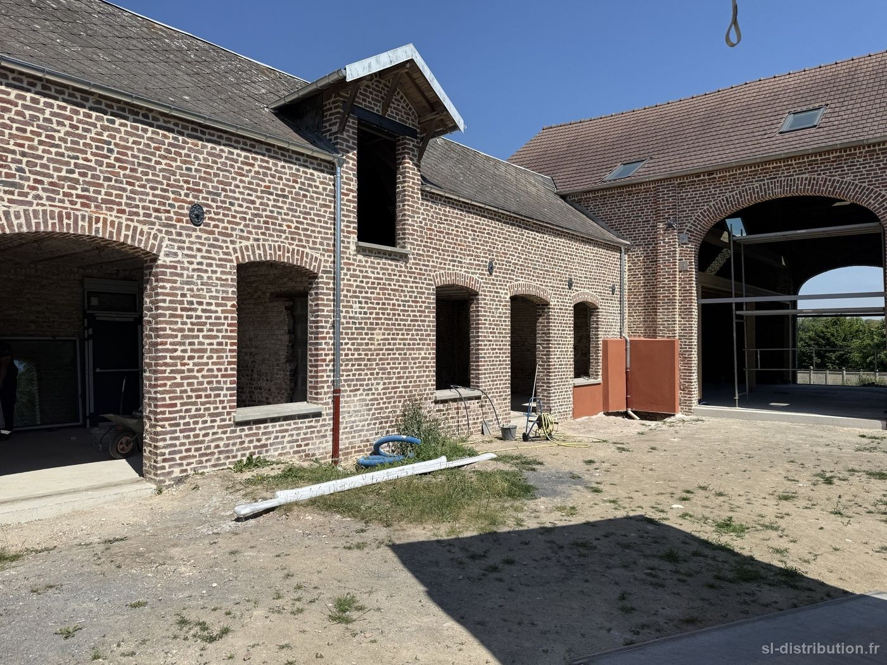
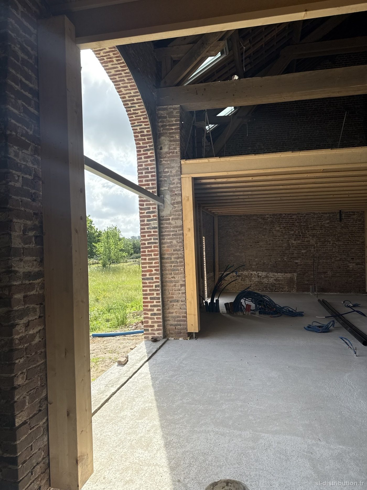
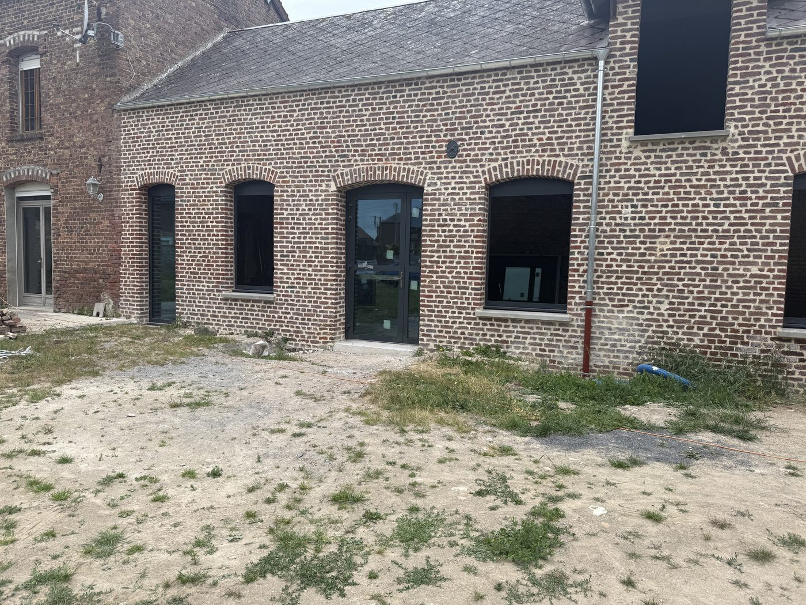
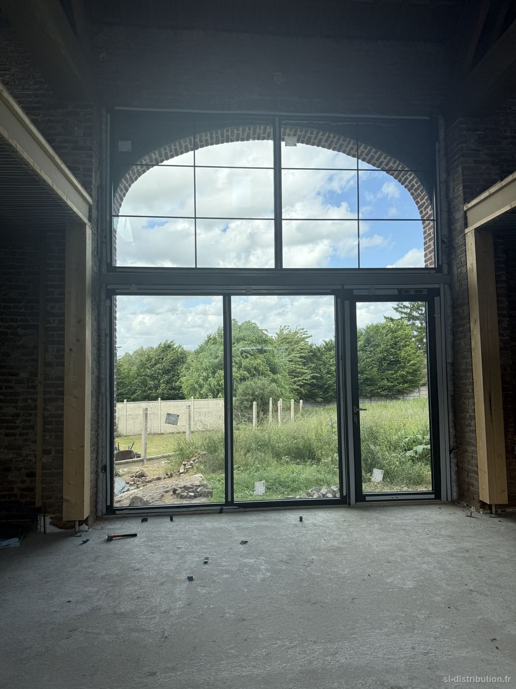

- Commune — Honnecourt-sur-Escaut
- Chantier — Rénovation, commerce — marché avec architecte
- Année — 2026
Le lot menuiseries extérieures de la rénovation de la pharmacie, mené en coordination avec le cabinet d'architecture, du chiffrage jusqu'à la réception du chantier.
Un chantier de commerce a ses contraintes propres : l'activité continue pendant les travaux, et la coordination avec les autres corps d'état se fait au planning de l'architecte. C'est exactement le genre de dossier où un interlocuteur unique, présent aux rendez-vous de chantier, fait la différence.










